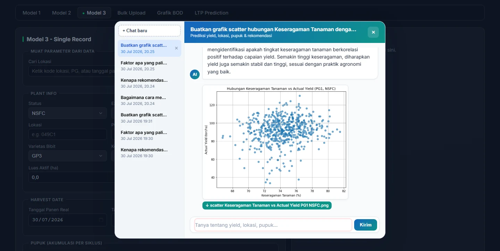
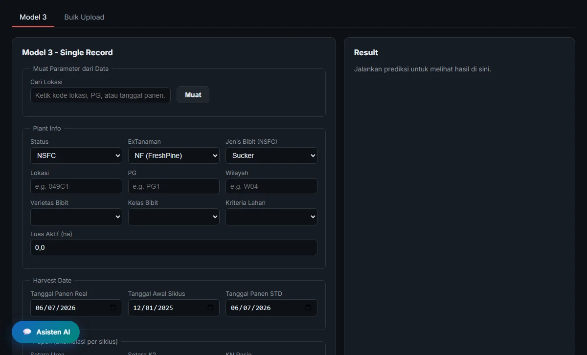
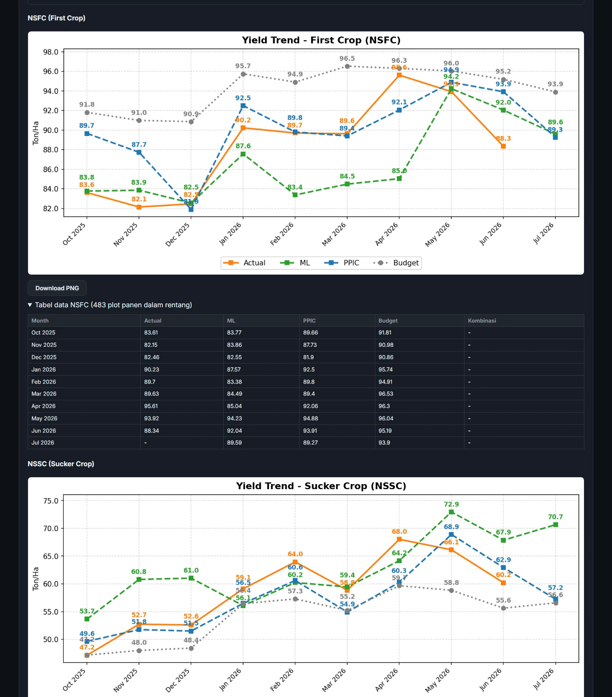
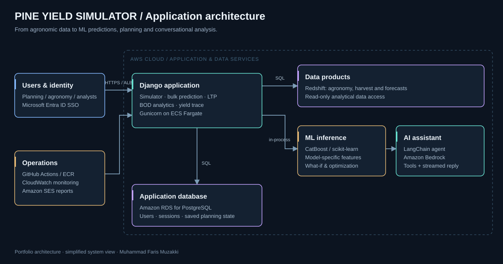
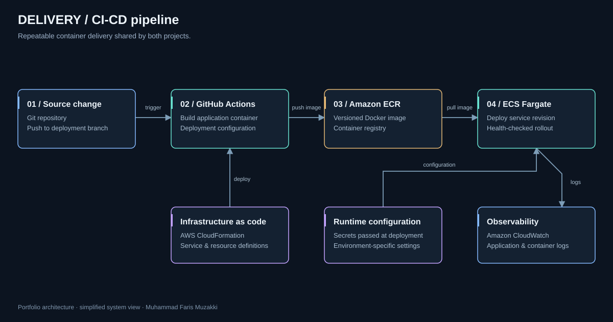

ML yield prediction
Model 1 and Model 2 use CatBoost, alongside stage-specific Model 3 inference for NSFC/NSSC. Agronomic, crop, weather and NDVI inputs support prediction for different planning horizons.
Machine learning · Decision support
Turning agronomic data into yield predictions, planning scenarios and answers people can act on.

01 / THE CONTEXT
Harvest planning brings together agronomic parameters, changing field conditions and several versions of the forecast. Planners need to compare ML predictions with PPIC forecasts and actual harvests, then understand which assumptions drive the difference.
I built a single application that connects prediction, scenario analysis and reporting. Users can run individual or bulk predictions, inspect forecast performance, explore long-term production plans and ask an AI assistant to query data or execute real ML inference.
02 / THE PRODUCT
Model 1 and Model 2 use CatBoost, alongside stage-specific Model 3 inference for NSFC/NSSC. Agronomic, crop, weather and NDVI inputs support prediction for different planning horizons.
Change input parameters, compare the resulting prediction, scan sensitivity and search for settings toward a target yield. Recommendations are evaluated by the inference tools.
A LangChain assistant on Amazon Bedrock calls prediction, data-query, historical benchmark and chart tools. It supports conversational analysis with persistent sessions and streamed responses.
Long-term planning scenarios, bulk input templates and downloadable prediction results connect model outputs to the planning workflow. Saved LTP state supports follow-up analysis.
Compare ML, PPIC and actual yield through BOD charts. Yield trace workflows produce slide previews, downloadable decks and monthly email recaps.
Master data management, analytical data integration, a prediction API and operational model controls support ongoing delivery. SSO, application roles and cloud deployment complete the platform.
03 / CONVERSATIONAL AI
Example request
“What can I change to improve the predicted yield for this location?”
The assistant retrieves the plot’s parameters, calls ML inference for the baseline and candidate changes, then explains the difference using historical context. Agronomic recommendations remain decision support for validation by the agronomy team.
04 / INSIDE THE APPLICATION
Captured from the application. These screenshots show the interface at the time of capture.


05 / UNDER THE HOOD
Django serves the application and runs prediction through the Python inference layer. Analytical inputs come from curated data products, while PostgreSQL stores application state. LangChain connects the chat interface to Amazon Bedrock and application tools; inference and queries supply the numerical results.


Simplified architecture views for this case study; infrastructure identifiers and environment-specific configuration are omitted.
06 / MY CONTRIBUTION
I built Pine Yield Simulator as a solo developer: solution architecture, frontend and backend implementation, data integration, AI capabilities, deployment and ongoing application improvements.
The work spans the full application lifecycle, connecting business requirements to a usable interface and the services that run it. Operational data and domain input come from the business context.
07 / WHAT THIS ENABLES
{kind=link}
{kind=link}
{kind=link}